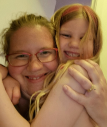

Lina Riddersporre
Jag är Lina Riddersporre. Jag är född i de småländska skogarna i en by som heter Rydaholm. Jag flyttade till Svedala som 15åring och började på gymnasiet.
Tog studenten 2008 från undersköterske utbildningen och började arbeta på ett äldreboende.
Där var jag till -12 då min son föddes efter föräldraledigheten gästspelade jag fram till 15 då dottern önskade komma till oss.
Sedan dess har jag sökt med ljus och lykta efter alternativ till vad jag ska göra när jag blir stor.
Jag testade hemstäd, tillbaka till äldrevården och hemtjänst och efter något år där så kände jag att det var dags att göra något.
Jag sökte till universitetet och började läsa till sjuksköterska.
Tre terminer senare fungerade det inte med familjelivet att pendla till Kristianstad så ansökte om förflyttning till Malmö.
I väntan på svar sa jag upp mig från min tjänst och kontaktade SUS i hopp om att det var arbetsplatsen och inte yrket.
Började som timvikarie på onkologen december -20 och känner efter ett par pass att jag måste göra något annat.
Vid detta laget har min make påbörjat studier till systemutvecklare vilket fick mig att söka gymnasiekurser inom webbutveckling, mm.
Nu är jag här.
Förövrigt har jag en dvärgpudel som jag uppskattar och älskar något otroligt mycket, förutom det spelar jag lite pc oftast Minecraft och Clicker Heroes.
You're never gonna make it, you're not good enough
There's a million other people with the same stuff
You really think you're different?..
..Make them take it all back
Don't tell me you believe that
Are you just gonna take that?
Or will you fucking fight back?
Fight Back
